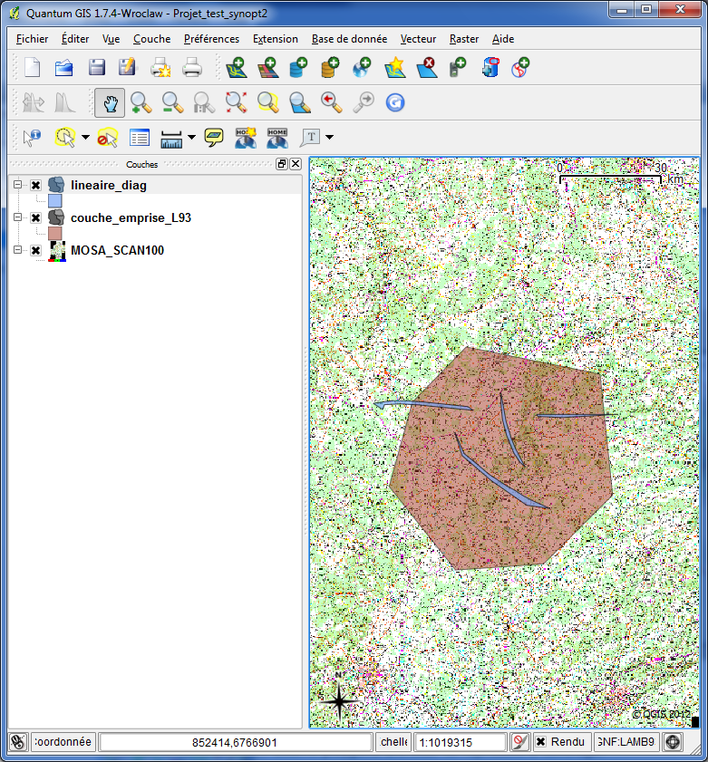
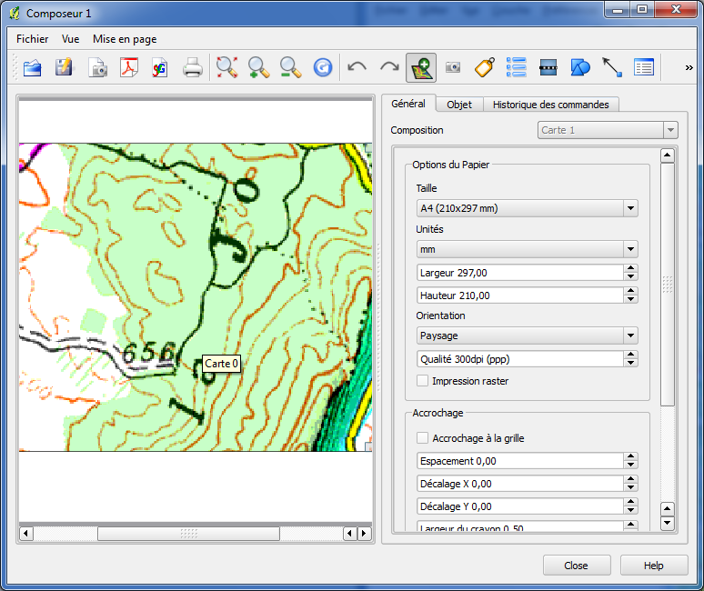
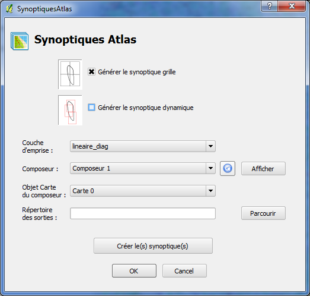
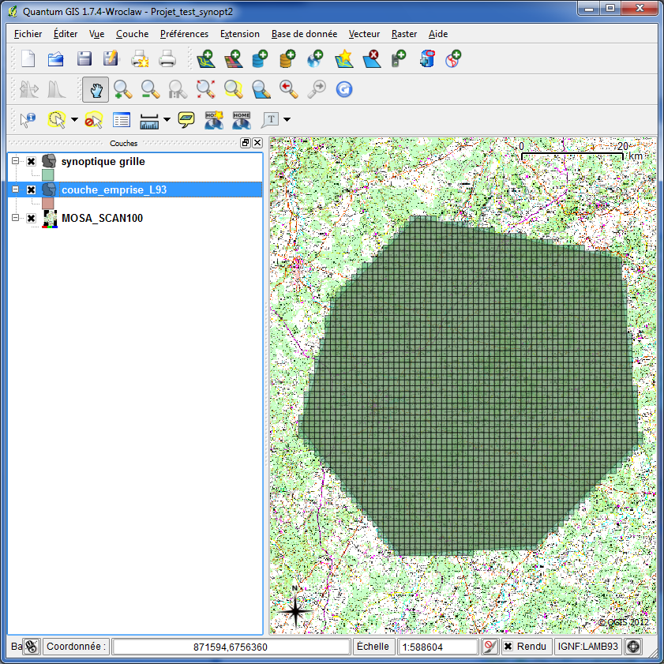
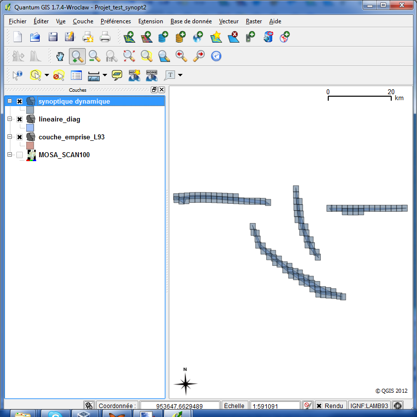

Vue globale
Le plugin Synoptiques Atlas vous permet de créer un synoptique, c'est-à-dire une grille pour un atlas, de facon automatique.
On utilise une couche d'emprise contenant les géométries englobant la zone à cartographier. Cette couche va définir l'étendue du synoptique.
On utilisera un composeur pour définir la taille d'une maille du synoptique.
Des identifiants sont affectés à chaque maille pour pouvoir utiliser le synoptique en entrée du plugin Atlas, et numéroter ensuite les planches de l'atlas.
On aura la possibilité de créer deux types de synoptiques: le synoptique basique ou "grille" qui est particulièrement adapté pour des couches d'emprise polygonales non linéaires, ou le synoptique "dynamique" plus adapté aux emprises de forme plus linéaires.
Créer un projet QGis
Vous devez créer un projet QGis contenant une couche vecteur d'emprise pour votre synoptique.

Créer un composeur
Ensuite vous créez un composeur, avec à l'intérieur un objet carte qui définira la taille de la maille du synoptique.

Démarche :
- Zoomer dans la fenêtre carte du projet à l'échelle que vous voulez comme référence de taille de maille.
- Créez un nouveau composeur et insérez un objet carte.
- Adaptez l'objet carte comme vous le souhaitez, et laisser un moment votre curseur de souris dessus. Une bulle d'info apparaît et vous donne le nom de l'objet carte à retenir (Carte 0 par exemple).
Plugin Synoptiques Atlas
Vous êtes maintenant à même de lancer le plugin. Trouvez l'entrée de menu et cliquez sur le bouton Synoptiques Atlas. Vous devriez voir apparaître la fenêtre suivante.

Vous devez remplir le formulaire suivant avant de cliquer sur Créer le(s) synoptique(s) pour lancer la création des synoptiques. Voici les différentes options :
- Générer le synoptique grille
- Génération d'un synoptique classique couvrant toute la couche d'emprise.
- Générer le synoptique dynamique
- Génération d'un synoptique adapté dynamiquement à la forme de la couche d'emprise. Celui-ci est particulièrement adapté pour les couches d'emprises de forme linéaires.
- Couche d'emprise
- On choisit la couche (vecteur) d'emprise correspondant à l'étendue que l'on veut couvrir à l'aide du synoptique.
- Composeur
- On sélectionne le composeur où l'on a défini un objet carte dont l'étendue défini la taille d'une maille du synoptique.
- Rafraîchir la liste des composeurs
- Si vous avez créé un nouveau composeur, ce bouton vous permet de rafraîchir la liste des composeurs.
- Afficher le composeur
- Permet d'afficher la fenêtre du composeur sélectionné dans la liste pour contrôle.
- Objet Carte du composeur
- On choisit l'objet carte de référence dans notre composeur (le nom est vérifiable dans la fenêtre composeur en laissant le curseur un moment sur l'objet carte en question).
- Répertoire des sorties
- Il faut sélectionner un répertoire de sortie où sera généré le(s) fichier(s) shape synoptique, à l'aide du bouton "Parcourir". Attention, si un synoptique a déjà été généré, veillez à supprimer les couches du projet Qgis avant de relancer l'outil Synoptiques.
- Créer les synoptiques
- Le bouton "Créer les synoptiques" lance la création du ou des synoptiques, et écrit les sorties dans le répértoire choisi.
Exemples de résultats
Les résultats sont écrits dans le répertoire spécifié et affichés dans la fenêtre Qgis.
Exemple de résultat pour une couche d'emprise non linéaire avec synoptique grille :

Et exemple de résultat pour une couche d'emprise linéaire avec synoptique dynamique :

Rectification éventuelles
Il se peut qu'il subsiste des microzones de la couche d'emprise non couvertes par le synoptique. Dans ce cas il conviendra de replacer à la main les mailles concernées.
{kind=link}
{kind=link}
{kind=link}
{kind=link}
{kind=link}